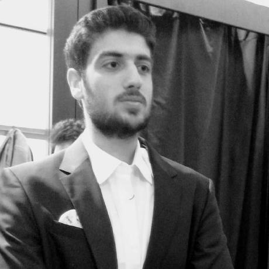

Ömer Altundal

Summary
I am a Front-End Web Developer with some experiences
Education
-
Graduated from TOKI Şehit Ozan Onur İlgen Anatolian High School
(2014-2017)
-
Bachelor of Computer Engineering - University of Çukurova (2018-2023)
Work Experience
-
Front-End Web Developer(Intern) - Wiki Software
July 2022-August 2022
- Coding part of Front-End at some projects
-
Fullstack Web Developer(Intern) -AtıkNakit
- Learn Back-End and rework on Front-End
Skills
- Front-End skills: ⭐️⭐️⭐️⭐️⭐️
- Back-End skills: ⭐️⭐️
Other
© Ömer Altundal. All rights reserved.